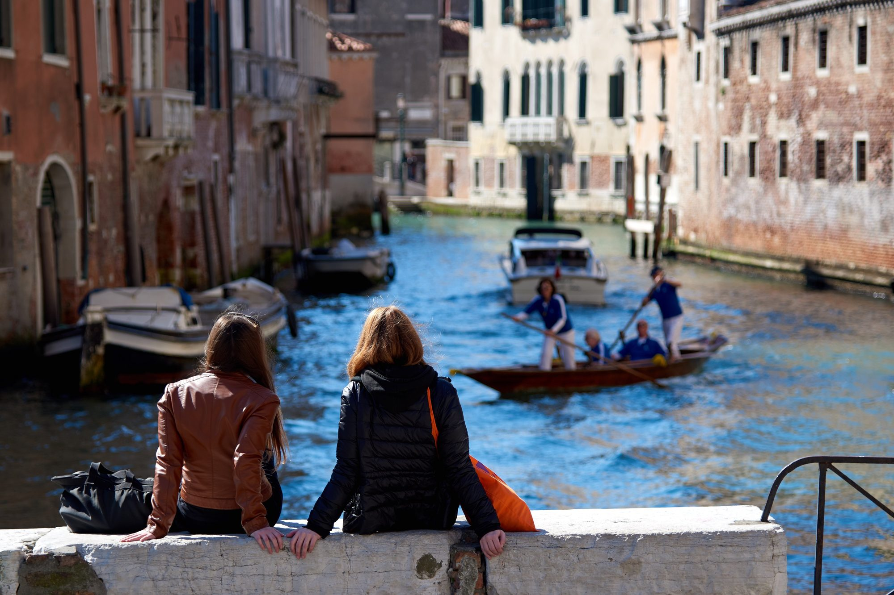

Ca’ Foscari University of Venice · 6–10 July 2026
The week at a glance
Explore
The full five-day schedule — search it, filter by type, add sessions to your calendar, find the venues on the map.
The teachers and invited specialists, and a few figures on the 2026 cohort.
Practical information about taking part, on the Ca’ Foscari website.